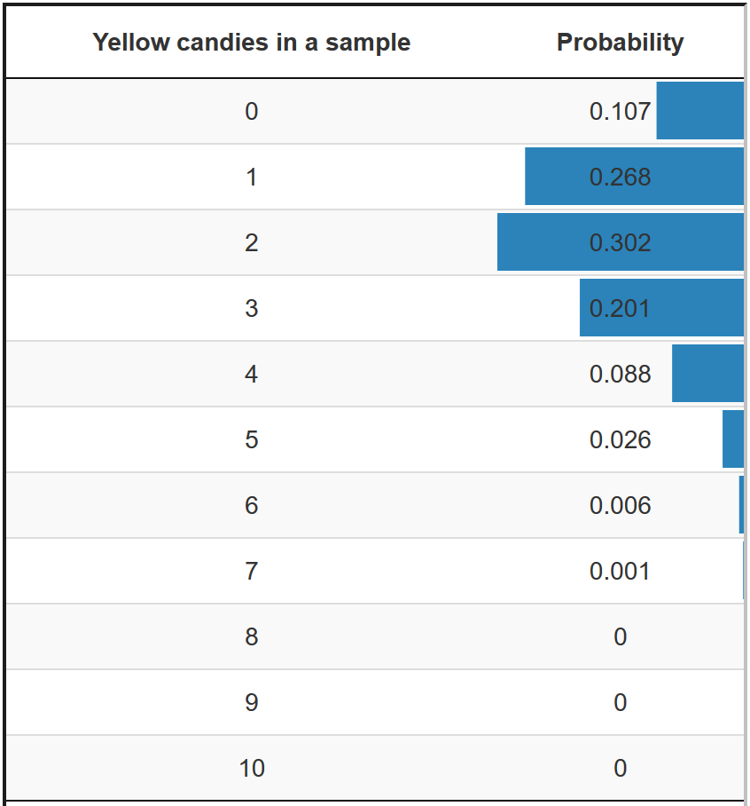

3 Estimating a Parameter: Which Population Values Are Plausible?
Key concepts: point estimate, interval estimate, confidence (level), precision, standard error, critical value, confidence interval.
Summary
Given our sample, what are plausible population values?
In this chapter, we set out to make educated guesses of a population value (parameter, often called “the true value”) based on our sample. This type of guessing is called estimation. Our first guess will be a single value for the population value. We merely guess that the population value is equal to the value of the sample statistic. This guess is the most precise guess that we can make, but, most likely, it is wrong.
Our second guess uses the sampling distribution to make a statement about the approximate population value. In essence, we calculate an interval that we are confident will contain the population value. We can increase our confidence by widening the interval, but this decreases the precision of our guess.
3.1 Point Estimate
If we have to name one value for the population value, our best guess is the value of the sample statistic. For example, if 18% of the candies in our sample bag are yellow, our best guess for the proportion of yellow candies in the population of all candies from which this bag was filled, is .18. What other number can we give if we only have our sample? This type of guess is called a point estimate and we use it a lot.
The sample statistic is the best estimate of the population value only if the sample statistic is an unbiased estimator of the population value. As we have learned in Section 1.2.5, the true population value is equal to the mean of the sampling distribution for an unbiased estimator. The mean of the sampling distribution is the expected value for the sample.
In other words, an unbiased estimator neither systematically overestimates the population value, nor does it systematically underestimate the population value. With an unbiased estimator, then, there is no reason to prefer a value higher or lower than the sample value as our estimate of the population value.
Even though the value of the statistic in the sample is our best guess, it is very unlikely that our sample statistic is exactly equal to the population value (parameter). The recurrent theme in our discussion of random samples is that a random sample differs from the population because of chance during the sampling process. The precise population value is highly unlikely to actually appear in our sample.
The sample statistic value is our best point estimate but it is nearly certain to be wrong. It may be slightly or far off the mark but it will hardly ever be spot on. For this reason, it is better to estimate a range within which the population value falls. Let us turn to this in the next section.
3.2 Interval Estimate for the Sample Statistic
The sampling distribution of a continuous sample statistic tells us the probability of finding a range of scores for the sample statistic in a random sample. For example, the average weight of candies in a sample bag is a continuous random variable. The sampling distribution tells us the probability of drawing a sample with average candy weight between 2.0 and 3.6 grams. We can use this range as our interval estimate.
Note that we are reasoning from sampling distribution to sample now. This is not what we want to do in actual research, where we want to reason from sample to sampling distribution to population. We get to that in Section 3.5. For now, assume that we know the true sampling distribution.
Remember that the average or expected value of a sampling distribution is equal to the population value if the estimator is unbiased. For example, the mean weight of yellow candies averaged over a very large number of samples is equal to the mean weight of yellow candies in the population. For an interval estimate, we now select the sample statistic values that are closest to the average of the sampling distribution.
Between which boundaries do we find the sample statistic values that are closest to the population value? Of course, we have to specify what we mean by “closest”. Which part of all samples do we want to include? A popular proportion is 95%, so we want to know the boundary values that include 95% of all samples that are closest to the population value. For example, between which boundaries is average candy weight situated for 95% of all samples that are closest to the average candy weight in the population?
Figure ?fig-ci-borders shows the sampling distribution of average sample candy weight.
Say, for instance, that 95% of all possible samples in the middle of the sampling distribution have an average candy weight ranging from 1.6 to 4.0 grams. The proportion .95 can be interpreted as a probability. Our sampling distribution tells us that we have 95% probability that the average weight of yellow candies lies between 1.6 and 4.0 grams in a random sample that we draw from this population.
We now have boundary values, that is, a range of sample statistic values, and a probability of drawing a sample with a statistic falling within this range. The probability shows our confidence in the estimate. It is called the confidence level of an interval estimate.
3.3 Precision, Standard Error, and Sample Size
The width of the estimated interval represents the precision of our estimate. The wider the interval, the less precise our estimate. With a less precise interval estimate, we will have to take into account a wider variety of outcomes in our sample.
If we want to predict something, we value precision. We would rather conclude that the average weight of candies in the next sample we draw is between 2.0 and 3.6 grams than between 1.6 and 4.0 grams. If we would be satisfied with a very imprecise estimate, we need not do any research at all. With relatively little knowledge about the candies that we are investigating, we could straightaway predict that the average candy weight is between zero and ten grams. The goal of our research is to find a more precise estimate.
There are several ways to increase the precision of our interval estimate, that is, to obtain a narrower interval for our estimate. The easiest and least useful way is to decrease our confidence that our estimate is correct. If we lower the confidence that we are right, we can discard a large number of other possible sample statistic outcomes and focus on a narrower range of sample outcomes around the true population value.
This method is not useful because we sacrifice our confidence that the range includes the outcome in the sample that we are going to draw. What is the use of a more precise estimate if we are less certain that it predicts correctly? Therefore, we usually do not change the confidence level and leave it at 95% or thereabouts (90%, 99%). It is important to be quite sure that our prediction will be right.
3.3.1 Sample sizes
A less practical but very useful method of narrowing the interval estimate is increasing sample size. If we buy a larger bag containing more candies, we get a better idea of average candy weight in the population and a better idea of the averages that we should expect in our sample.
Figure ?fig-interval-size shows a sampling distribution of average candy weight in candy sample bags. The size of the horizontal arrow represents the precision of the interval estimate: the shorter the arrow, the more precise the interval estimate.
As you may have noticed while playing with Figure ?fig-interval-size, a larger sample yields a narrower, that is, more precise interval. You may have expected intuitively that larger samples give more precise estimates because they offer more information. This intuition is correct.
In a larger sample, an observation above the mean is more likely to be compensated by an observation below the mean. Just because there are more observations, it is less likely that we sample relatively high scores but no or considerably fewer scores that are relatively low.
The larger the sample, the more the distribution of scores for a variable in the sample will resemble the distribution of scores for this variable in the population. As a consequence, a sample statistic value will be closer to the population value for this statistic.
Larger samples resemble the population more closely, and therefore large samples drawn from the same population are more similar. The result is that the sample statistic values in the sampling distribution are less varied and more similar. They are more concentrated around the true population value. The middle 95% of all sample statistic values are closer to the centre, so the sampling distribution is more peaked.
3.3.2 Standard error
The concentration of sample statistic values, such as average candy weight in a sample bag, around the centre (mean) of the sampling distribution is expressed by the standard deviation of the sampling distribution. Up until now, we have only paid attention to the centre of the sampling distribution, its mean, because it is the expected value in a sample and it is equal to the population value if the estimator is unbiased.
Now, we start looking at the standard deviation of the sampling distribution as well, because it tells us how precise our interval estimate is going to be. The sampling distribution’s standard deviation is so important that it has received a special name: the standard error.
The word error reminds us that the standard error represents the size of the error that we are likely to make (on average under many repetitions) if we use the value of the sample statistic as a point estimate for the population value.
Let us assume, for instance, that the standard error of the average weight of candies in samples is 0.6. Loosely stated, this means that the average difference between true average candy weight and average candy weight in a sample is 0.6 if we draw very many samples from the same population.
The smaller the standard error, the more the sample statistic values resemble the true population value, and the more precise our interval estimate is with a given confidence level, for instance, 95%. Because we like more precise interval estimates, we prefer small standard errors over high standard errors.
It is easy to obtain smaller standard errors: just increase sample size. See Figure ?fig-interval-size, where larger samples yield more peaked sampling distributions. In a peaked distribution, values are closer to the mean and the standard error is smaller. In our example, average candy weights in larger sample bags are closer to the average candy weight in the population.
In practice, however, it is both time-consuming and expensive to draw a very large sample. Usually, we want to settle on the optimal size of the sample, namely a sample that is large enough to have interval estimates at the confidence level and precision that we need but as small as possible to save on time and expenses. We return to this matter in Section 4.2.3.
The standard error may also depend on other factors, such as the variation in population scores. In our example, more variation in the weight of candies in the population produces a larger standard error for average candy weight in a sample bag. If there are more very heavy candies and very light candies, it is easier to draw a sample with several heavy candies or with several very light candies. Average weight in these sample bags will be too high or too low. We cannot influence the variation in candy weights in the population, so let us ignore this factor influencing the standard error.
3.4 Critical Values
In the preceding section, we learned that the standard error is related to the precision of the interval estimate. A larger standard error yields a less precise estimate, that is, with a wider interval estimate.
We are interested in the interval that includes a particular percentage of all samples that can be drawn, usually the 95% of all samples that are closest to the population value. In our current example, the 95% of all samples with average candy weight that is closest to average candy weight in the population (2.8 grams).
In theoretical probability distributions like the normal distribution, the percentage of samples is related to the standard error. If we know the standard error, we know the interval within which we find the 95% of samples that are closest to the population value.
Figure ?fig-crit-values shows the sampling distribution of average candy weight per sample bag. It contains two horizontal axes, one with average candy weight in grams (bottom) and one with average candy weight in standard errors, also called z scores (top).
In Figure ?fig-crit-values, we approximate the sampling distribution with a theoretical probability distribution, namely the normal distribution. The theoretical probability distribution links probabilities (areas under the curve) to sample statistic outcome values (scores on the horizontal axis). For example, we have 2.5% probability of drawing a sample bag with average candy weight below 1.2 grams or 2.5% probability of drawing a sample bag with average candy weight over 4.4 grams.
3.4.1 Standardization and z scores
The average candy weights that are associated with 2.5% and 97.5% probabilities in Figure ?fig-crit-values depend on the sample that we have drawn. As you may notice while playing with Figure ?fig-interval-size, changing the size of the sample also changes the average candy weights that mark the 2.5% and 97.5% probabilities.
We can simplify the situation if we standardize the sampling distribution: Subtract the mean of the sampling distribution from each sample mean in this distribution, and divide the result by the standard error. Thus, we transform the sampling distribution into a distribution of standardized scores. The mean of the new standardized variable is always zero.
If we use the normal distribution for standardized scores, which is called the standard-normal distribution or z distribution, there is a single z value that marks the boundary between the top 2.5% and the bottom 97.5% of any sample. This z value is 1.96. If we combine this value with -1.96, separating the bottom 2.5% of all samples from the rest, we obtain an interval [-1.96, 1.96] containing 95% of all samples that are closest to the mean of the sampling distribution.
In a standard-normal or z distribution, 1.96 is called a critical value. Together with its negative (-1.96), it separates the 95% sample statistic outcomes that are closest to the parameter, hence that are most likely to appear, from the 5% that are furthest away and least likely to appear. There are also critical z values for other probabilities, for instance, 1.64 for the middle 90% of all samples and 2.58 for the middle 99% in a standard-normal distribution.
3.4.2 Interval estimates from critical values and standard errors
Critical values in a theoretical probability distribution tell us the boundaries, or range, of the interval estimate expressed in standard errors. In a normal distribution, 95% of all sample means are situated no more than 1.96 standard errors from the population mean.
If the standard error is 0.5 and the population mean is 2.8 grams, we have 95% probability that the mean candy weight in a sample that we draw from this population lies between 1.82 grams (this is 1.96 times 0.5 subtracted from 2.8) and 3.78 grams.
Critical values make it easy to calculate an interval estimate if we know the standard error. Just take the population value and add the critical value times the standard error to obtain the upper limit of the interval estimate. Subtract the critical value times the standard error from the population value to obtain the lower limit.
- Lower limit of the interval estimate = population value – critical value * standard error.
- Upper limit of the interval estimate = population value + critical value * standard error.
(Standard) normal distributions make life easier for us, because there is a fixed critical value for each probability, such as 1.96 for 95% probability, which is well-worth memorizing.
3.5 Confidence Interval for a Parameter
Working through the preceding sections, you may have realized that estimating the value of a statistic in a new sample with a specific precision and probability is not our ultimate goal, as it does not fully represent reality. In reality, we do not know the population parameter, and the primary objective of statistics is to estimate this unknown population parameter.
For example, we don’t care much about the average weight of candies in our sample bag or in the next sample bag that we may buy. We want to say something about the average weight of candies in the population. How can we do this?
In addition, you may have realized that, if we want to construct the sampling distribution of sample means, we first need to know the precise population value, for instance, average candy weight in the population. After all, the average of the sampling distribution is equal to the population mean for an unbiased estimator. In the preceding paragraphs, we acted as if we knew the sampling distribution of sample means.

In the exact approach to the sampling distribution of the proportion of yellow candies in a sample bag (Figure ?fig-exactapproachfigure), for instance, we first need to know the proportion of yellow candies in the population. If we know the population proportion, we can calculate the exact probability of getting a sample bag with a particular proportion of yellow candies. But we don’t know the population proportion of yellow candies; we want to estimate it.
In the candy weight example, we first need to know the mean of population candy weight, then we can construct a theoretical probability distribution of sample means. But we do not know the population mean; we want to estimate it.
A theoretical probability distribution can only be used as an approximation of a sampling distribution if we know some characteristics of the population. We know that the sampling distribution of sample means always has the bell shape of a normal distribution or t distribution. However, knowing the shape is not sufficient for using the theoretical distribution as an approximation of the sampling distribution.
We must also know the population mean because it specifies where the centre of the sampling distribution is located. So, we must know the population mean to use a theoretical probability distribution to estimate the population mean.
By the way, we also need the standard error to know how peaked or flat the bell shape is. The standard error can usually be estimated from the data in our sample. But let us not worry about how the standard error is being estimated and focus on estimating the population mean.
3.5.1 Reverse reasoning from one sample mean
In the previous chapters, we were reasoning from population mean to sampling distribution of sample means, then to a single sample mean. Based on the known population mean and standard error, we could draw an interval estimate around the population mean of the sampling distribution (Figure ?fig-crit-values). 95% of all sample means would fall within this interval estimate around the known population mean.
In practice though, the population mean is unknown. We only have the sample mean derived from our collected data. Using this sample mean, we would like to estimate the population mean.
Instead of checking whether a sample mean is inside or outside of the interval estimate of the population mean (Section 3.4), we use the interval estimate around that one sample mean, to check whether this interval catches the population mean. These two ways are equivalent, but the second way does not require us to know the population mean. This is because the interval estimate around the sample means catches the population mean in 95% of the times, regardless if the population mean is known or not. We call such an interval estimate around the sample mean a 95% confidence interval.
The middle plot of Figure ?fig-pop-ci-sampling, shows the 95% confidence interval for a single sample, from the population distribution in the top graph. The green line indicates that the interval estimate around the sample mean catches the population mean. The average candy weight in this samples of \(N=30\) is 2.95 grams and the lower and upper boundary for 95% confidence interval are 2.59 grams and 3.32 grams. We use the blue vertical dashed line to indicate the population mean, which in reality we do not know. Though, in this simulation, we can see that the green 95% confidence interval catches the population mean.
Now, increase the number of times of samples (replications) by adjusting the slider in Figure ?fig-pop-ci-sampling. The middle plot now shows how many of the samples with a 95% confidence intervals catch the population mean, indicated by the green lines. The red lines indicate that the 95% confidence interval does not catch the population mean. The percentage that catch the population mean approaches 95% as the number of samples gets higher.
Now, also increase the sample size in Figure ?fig-pop-ci-sampling by moving the slider. We see that, in the middle plot, all confidence intervals become narrower. We therefore are much more confident in our estimation of the population mean with a larger sample size.
Note that the confidence intervals are not of the same with, and that the upper and lower bound for each sample is different. This is because the sample mean is different for each sample, and the standard error is calculated from the sample. It is therefore incorrect to say that you are 95% confident that the population mean is within the specific lower and upper bound of your sample. Instead, you are 95% confident that the interval estimate around the sample mean catches the population mean. This is a subtle difference, but indicates that only repeated sampling is the rationale for the confidence that the population mean is within the interval estimate.
If we were to repeat the experiment over and over, then 95% of the time the confidence intervals contain the true mean.
— Hoekstra et al. (2014)
It is very important that we understand that the confidence level 95% is NOT the probability that the population parameter has a particular value, or that it falls within the interval.
In classic statistics (so called “Frequentists”), the population parameter is not a random variable but a fixed, unknown number, which does not have a probability.
A confidence interval around a sample statistics from solely one data collection either catches (100%) or does not catch (0%) the population parameter. We just do not know which one is the case. That’s why we cannot make any conclusion about the population mean based on one confidence interval.
Only when we replicate data collection many many times, we do know that about 95% of all 95% confidence intervals will catch the population mean.
Now imagine that you have a large sample for your research project. Looking at Figure ?fig-pop-ci-sampling, this would mean that if you would run the same research a hundred times, you would find the population mean within the 95% confidence interval in 95 of these hundred times. That is very reasuring, isn’t it?
In the bottom plot of Figure ?fig-pop-ci-sampling, we revisit Chapter 1, to illustrate how these 95% confidence intervals around the sample means are related to the sampling distribution. Each confidence interval in the middle plot is an approximation of the width of the sampling distribution in the bottom plot. The larger the samples size, the narrower the confidence intervals are, and the narrower the sampling distribution becomes in the bottom plot. The histogram represents the sample means from the number replications. Each sample mean comes from one replication.
We also see the theoretical approximation of this sampling distribution (as was discussed in Section 2.3) of sample means, which is a normal distribution. As the number of replications and sample size increases, the shape of the histogram gets closer to the shape of the theoretical approximation of the sampling distribution (green line), which in turn also gets narrower.
This sampling distribution is theoretically approximated by a normal distribution whose mean is the population mean and standard deviation is the standard error of the sample. To make our life easier, we can convert the sampling distribution, which is a normal distribution, to the standard normal distribution by converting to a z-score. The critical z value 1.96 and -1.96 together marks the upper and lower limit of the interval containing 95% of all samples with means closest to the population mean.
As a consequence, we are able to calculate 95% confidence interval around a sample mean by adding and subtracting 1.96 standard errors from that sample mean.
- Confidence interval lower limit = sample value – critical value * standard error.
- Confidence interval upper limit = sample value + critical value * standard error.
For example, the 95%-confidence interval for a sample mean:
- Lower limit = sample mean - 1.96 * standard error.
- Upper limit = sample mean + 1.96 * standard error.
Haven’t we seen this calculation before? Yes we did, in Section 3.4.2, where we estimated the interval around population mean for sample means. We now simply reverse the application, using the interval of sample mean to estimate the population mean instead of the other way around.
Jerzy Neyman introduced the concept of a confidence interval in 1937:
“In what follows, we shall consider in full detail the problem of estimation by interval. We shall show that it can be solved entirely on the ground of the theory of probability as adopted in this paper, without appealing to any new principles or measures of uncertainty in our judgements”. (Neyman 1937: 347)
Photo of Jerzy Neyman by Ohonik, Commons Wikimedia, CC BY-SA 4.0]3.5.2 Confidence intervals with bootstrapping
If we approximate the sampling distribution with a theoretical probability distribution such as the normal (z) or t distribution, critical values and the standard error are used to calculate the confidence interval (see Section 3.5.1).
There are theoretical probability distributions that do not work with a standard error, such as the F distribution or chi-squared distribution. If we use those distributions to approximate the sampling distribution of a continuous sample statistic, for instance, the association between two categorical variables, we cannot use the formula for a confidence interval (Section 3.5.1) because we do not have a standard error. We must use bootstrapping to obtain a confidence interval.
As you might remember from Section 2.5, we simulate a sampling distribution if we bootstrap a statistic, for instance median candy weight in a sample bag. We can use this sampling distribution to construct a confidence interval. For example, we take the values separating the bottom 2.5% and the top 2.5% of all samples in the bootstrapped sampling distribution as the lower and upper limits of the 95% confidence interval. We will encounter the bootstrapping method for confidence intervals around regression coefficient of mediator again in chapter 11.
It is also possible to construct the entire sampling distribution in exact approaches to the sampling distribution. Both the standard error and percentiles can be used to create confidence intervals. This can be very demanding in terms of computer time, so exact approaches to the sampling distribution usually only report p values (see Section 4.2.6), not confidence intervals.
3.6 Confidence Intervals in SPSS
3.6.1 Instruction
3.7 Take-Home Points
If a sample statistic is an unbiased estimator, we can use it as a point estimate for the value of the statistic in the population.
A point estimate may come close to the population value but it is almost certainly not correct.
A 95% confidence interval is an interval estimate of the population value. We are 95% confident that the population value lies within this interval. Note that confidence is not a probability!
A larger sample or a lower confidence level yields a narrower, that is, a more precise confidence interval.
A larger sample yields a smaller standard error, which yields a more precise confidence interval because the limits of a 95% confidence interval fall one standard error times the critical value below and above the value of the sample statistic.